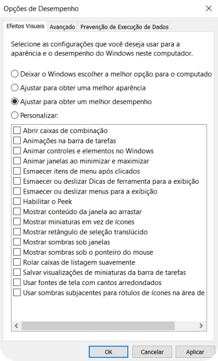
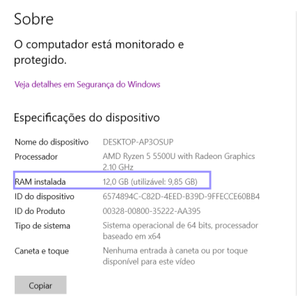
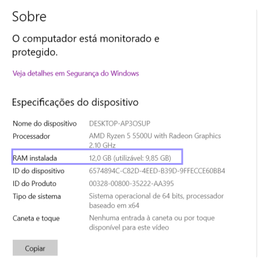

Como deixar o computador mais rápido
Demorado
dez 14, 2024
Irémos usar apenas os recursos que o windows disponibiliza, logo, este tutorial é totalmente seguro.
1. Altere o plano de energia
O plano de energia no Windows ou Mac controla como o computador gerencia o consumo de energia. Digite Energia na Barra de pesquisa e clique em Escolher um plano de energia.
1.1 Desempenho maximo ou Alto desempenho
Selecione a opção de Desempenho máximo ou Alto desempenho. Esses planos priorizam a velocidade e o desempenho do computador. Porém, ele consome mais energia, o que pode não ser ideal para laptops se desconectados da tomada.
OBS: Você precisará ser administrador da máquina. Em um MAC: Acesse Preferências do Sistema > Desempenho máximo.
2. Efeitos visuais
Efeitos visuais como animações e sombras tornam a interface mais bonita, mas consomem recursos do sistema. Na Barra de pesquisa, digite Configurações avançadas e pressione Enter.
2.1 Propiedades do sistema
Na mini tela, Você terá várias informações sobre o computador, mas neste caso, você precisará clicar em Configurações da caixa Configurações para o próximo passo.
2.2 Configurando os efeitos
Aqui, você terá 3 opções, com a pré-definição de Deixar o Windows escolher... Mas, como queremos desempenho, clique em Ajustar para obter um melhor desempenho. Isso vai desativar a maioria dos efeitos visuais, aumentando o desempenho. (recomendado para máquinas antigas). Feito isso, clique em Aplicar para as mudanças serem salvas e em OK para fechar a janela.
3. Atualize a parte física (hardware)
Se realmente nada der jeito, investir em melhorias de hardware pode melhorar significativamente o desempenho do computador. Isto é, comprar novas peças para substituir as antigas. Para fazer a instalação é recomendado que recorra a um profissional de TI, por exemplo os da DTI de seu campus.
Aumentar a RAM permite que o computador realize mais tarefas simultaneamente e substituir um disco rígido (HD) por um SSD melhora a velocidade de inicialização do sistema, abertura de programas e leitura/escrita de arquivos.
4. Modo de Jogo
Este modo desativa processos em segundo plano desnecessários e otimiza o uso do hardware para aumentar o desempenho dos programas que exigem muito do computador. vá para a Barra de pesquisa, digite Modo de Jogo e aperte Enter.
4.1 Ative o Modo de Jogo
Clique no botão para deixar como Ativado, Você também pode clicar em Saiba mais sobre o Modo de Jogo para saber exatamente como esta configuração funciona.
5. Armazenamento Virtual (Pagefile)
O armazenamento virtual usa parte do disco rígido como "memória extra" quando a RAM está cheia. Isso fornece espaço adicional para tarefas exigentes. Novamente na Barra de pesquisa, digite Configurações avançadas e pressione .
5.1 Opções de desempenho
Novamente nesta janela, clique em Avançado para ver as configurações da memória virtual e preferência do processador. Nesta nova aba, clique em Alterar...
5.2 Personalizar tamanho
Primeiro, clique em Tamanho personalizado para poder alterar o quanto de “memoria extra” o sistema terá, por padrão o Windows ajusta o tamanho com base na quantidade de memória RAM instalada e nas necessidades do sistema.
Embora o gerenciamento automático funcione bem para a maioria dos usuários, ajustar a memória virtual manualmente pode melhorar o desempenho em PCs com muita ou pouca RAM.
5.3 Verifique sua RAM
o recomendado é deixar o Tamanho inicial/Máximo (isso mesmo, iguais) em 2x ou até 3x a quantidade de memória RAM. A RAM pode ser vista se você digitar Sobre o computador na Barra de pesquisa e pressionar Enter.
 

5.4 Altere os tamanhos
Verificado a RAM, insira um valor na faixa de duas a três vezes o valor da memória RAM no Tamanho máximo/minimo e clique em Definir para salvar. Feito isso, clique em OK e aproveite o desempenho superior que seu computador irá apresentar.